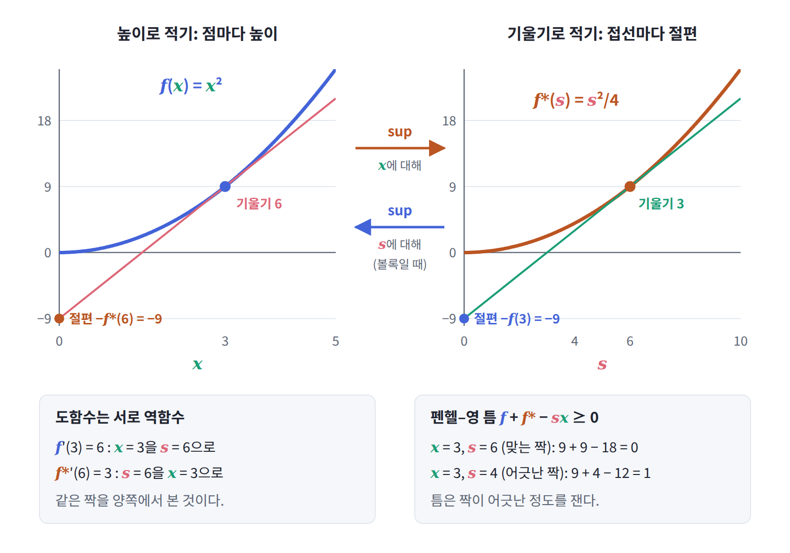
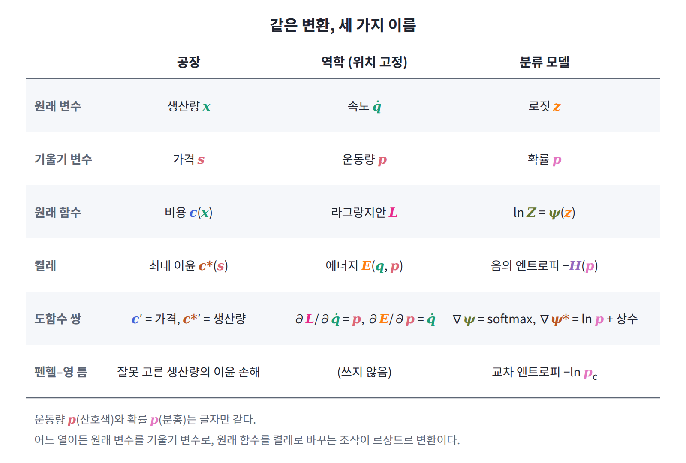

펜헬–영 부등식: 교차 엔트로피의 정체
f*(s)는 가장 좋은 x를 골랐을 때의 sx − f(x)다. 그렇다면 가장 좋은 x가 아니라 아무 x나 골라 s와 짝지으면, f(x)와 f*(s)와 sx 사이에는 어떤 관계가 남을까? 분류 모델의 로짓과 정답처럼, 서로 딱 맞는 짝이라는 보장이 없는 두 값을 다룰 때 바로 이 물음이 생긴다.
역사: 펜헬
르장드르 변환을 최적화의 도구로 다듬은 사람 가운데 하나가 베르너 펜헬이다. 1949년 논문 「볼록 켤레 함수에 관하여」에서 그는 미분할 수 없는 볼록 함수까지 켤레를 넓혔다. 기울기가 하나로 정해지지 않는 뾰족한 점이 있어도, sup으로 쓴 정의는 그대로 쓸 수 있기 때문이다.
정의에서 바로 나오는 부등식
답은 정의에서 바로 나온다. f*(s)는 sx − f(x)의 sup이므로, 어떤 특정한 x를 골라도 sx − f(x)보다 작지 않다. 이항하면 다음을 얻는데, 이것을 펜헬–영 부등식 (Fenchel–Young inequality)이라 한다.
등호는 s가 정확히 x에서의 기울기 f′(x)일 때만 성립한다. 공장 문제로 읽으면 「어떤 생산량 x를 골라도 이윤 sx − c(x)는 최대 이윤을 넘지 못하고, 딱 맞는 생산량일 때만 같다」는 당연한 말이다. 그런데 양변의 차이 f(x) + f*(s) − sx는 항상 0 이상이고 맞는 짝에서만 0이므로, 예측과 정답이 얼마나 어긋났는지를 재는 손실 함수로 쓸 수 있다.

정답을 넣은 틈
그렇다면 로그 분배함수와 그 켤레로 만든 틈에 로짓과 정답을 넣으면 어떤 손실이 나올까? ψ(z) + ψ*(y) − Σ yᵢzᵢ는 항상 0 이상이고, y가 z의 기울기인 softmax일 때만 0이다. 여기에 정답 클래스가 c인 원-핫 벡터 y를 넣으면, 원-핫 벡터의 엔트로피는 0이므로 ψ*(y) = 0이다. 그러면 남는 것은 우리가 매일 쓰는 손실이다.
교차 엔트로피 손실은 펜헬–영 부등식의 틈 그 자체다. 이렇게 보면 로짓에 대한 기울기도 바로 보인다. ψ(z)의 기울기는 softmax p이고 Σ yᵢzᵢ의 기울기는 y이므로 손실의 기울기는 p − y, 곧 「예측 확률 − 정답」이다. 역전파 코드를 짜 본 사람이라면 외워 두었을 이 결과는 「로그 분배함수의 기울기가 확률이다」라는 켤레 관계를 반복해서 쓴 것이다.
이진 분류: sigmoid와 logit
클래스가 두 개인 이진 분류에서는 같은 이야기가 더 익숙한 모습으로 나타난다. 로짓이 하나라면 로그 분배함수는 softplus ln(1 + e^z)이고 그 기울기는 sigmoid다. 켤레는 이진 엔트로피에 마이너스를 붙인 p ln p + (1 − p) ln(1 − p)이고 그 기울기는 ln(p/(1 − p)), 곧 logit 함수다. 켤레 쌍의 두 도함수는 서로 역함수이므로, sigmoid와 logit이 서로 역함수인 것은 공장 문제에서 한 개를 더 만드는 비용 c′(x)(경제학의 한계비용)와 이윤 곡선의 기울기가 서로 역함수였던 것과 같은 이유다.
지수족의 두 좌표
이 관계는 범주형 분포만의 것이 아니다. 정규분포, 푸아송 분포처럼 확률이 「매개변수와 특징의 곱」의 지수함수에 비례하는 분포들을 지수족(exponential family)이라 부르는데, 이때 지수에 들어가는 매개변수를 자연 매개변수(로짓의 일반형), 특징의 기댓값을 평균 매개변수(확률의 일반형)라 한다. 어느 지수족에서든 로그 분배함수의 기울기는 평균 매개변수이고 그 켤레는 음의 엔트로피다(엄밀히는 지수족마다 정해 둔 기준 분포에 대한 KL이고, 기준이 균등하면 음의 엔트로피에 상수를 더한 것이 된다). 같은 분포를 자연 매개변수로 짚을 수도, 평균 매개변수로 짚을 수도 있으며, 한 좌표에서 다른 좌표로 옮겨 가는 변환이 곧 르장드르 변환이다. 모델이 로짓을 출력하고 손실은 확률로 계산하는 일상적인 학습은 사실 이 두 좌표를 오가는 일이다.

ML에서: 펜헬–영 손실
Blondel, Martins, Niculae(2020)의 「Learning with Fenchel–Young Losses」는 이 관점을 거꾸로 써서, 음의 엔트로피 자리에 다른 볼록 함수를 넣으면 softmax 대신 sparsemax 같은 새 출력층과 그에 맞는 손실이 한꺼번에 나온다고 보였다.
문제 6. 축제 부스의 붕어빵
과 축제에서 붕어빵 부스를 연다. 붕어빵 x백 개를 굽는 데 드는 재료비와 아르바이트비는 x²만 원이다. 판매 가격은 축제 당일 학생회가 정하는데, 전날 밤 붕어빵 200개(x = 2)의 반죽을 준비해 두었다. 당일 가격이 백 개에 6만 원(s = 6)으로 정해졌다면, 가격을 미리 알았을 때보다 이윤을 얼마나 덜 버는가?

가격이 6이면 가장 좋은 생산량은 s/2 = 3, 곧 300개예요. 100개를 덜 만들었고 백 개에 6만 원이니까 6만 원 손해예요.

덜 만든 100개도 공짜로 굽는 건 아니잖아. 그만큼 재료비가 덜 들었어.
두 경우의 이윤을 직접 적어 봐요.

200개면 12 − 4 = 8만 원, 300개면 18 − 9 = 9만 원. 차이는 1만 원이네요. 판 돈은 6만 원 더 들어오지만 비용도 9 − 4 = 5만 원 더 들어요.

그 1만 원을 펜헬–영 부등식의 틈으로 적으면 c(2) + c*(6) − 6 × 2 = 4 + 9 − 12예요. 준비한 양과 가격이 딱 맞는 짝일 때만 0이 되죠.

400개를 준비했어도 16 + 9 − 24 = 1이네요. c = x²이면 틈이 (x − s/2)²라서, 모자라게 만들든 넘치게 만들든 같은 만큼 놓치는 거고요.

많이 만들면 마지막 백 개를 굽는 비용이 가격보다 비싸지고, 적게 만들면 가격보다 싸게 구울 수 있던 백 개를 놓치는 거네요.
문제 7. 정답이 섞인 라벨의 손실
두 클래스 분류기가 로짓 z = (2, 0)을 내놓았다. (가) 정답이 첫째 클래스인 원-핫 라벨 y = (1, 0)일 때와 둘째 클래스인 y = (0, 1)일 때 펜헬–영 틈 ψ(z) + ψ*(y) − Σ yᵢzᵢ를 구하라. (나) 라벨 스무딩으로 y = (0.9, 0.1)을 쓸 때 틈과 교차 엔트로피 −Σ yᵢ ln pᵢ를 각각 구하라. 둘은 왜 다른가?
붕어빵 문제랑 같은 틀이네요. 로짓이 전날 준비한 양이고, 라벨이 당일 정해진 가격이에요. ln Z = 2.1269니까 y = (1, 0)이면 2.1269 + 0 − 2 = 0.1269, y = (0, 1)이면 2.1269 − 0 = 2.1269. 둘 다 −ln p_c와 같아요.
(나)도 교차 엔트로피 식에 넣으면 되죠. 0.9 × 0.1269 + 0.1 × 2.1269 = 0.3269. 원-핫일 때 둘이 같았으니까 틈도 0.3269겠죠.

원-핫일 때 ψ*(y)는 얼마였죠? 이번에는요?
원-핫은 엔트로피가 0이라 ψ*(y) = 0이었어요. (0.9, 0.1)이면 0.9 ln 0.9 + 0.1 ln 0.1 = −0.3251이에요. 그럼 틈은 2.1269 − 0.3251 − 1.8 = 0.0018이고, 교차 엔트로피와는 0.3251만큼 달라요.
0.3251이 y의 엔트로피네요. 교차 엔트로피 = 틈 + H(y)이고, 틈은 KL(y ‖ softmax)예요.

그래서 라벨 스무딩을 쓰면 교차 엔트로피는 아무리 학습해도 0.3251 아래로 내려가지 않아요. 로짓 차이가 ln 9 = 2.197이 되어 softmax가 (0.9, 0.1)을 맞히는 순간 틈은 0이지만, 손실은 그 높이에서 멈춰 보여요.

스무딩을 켜고 학습했을 때 loss가 0.3 근처에서 안 내려가서 학습이 멈춘 줄 알았는데, 그게 바닥이었네요.